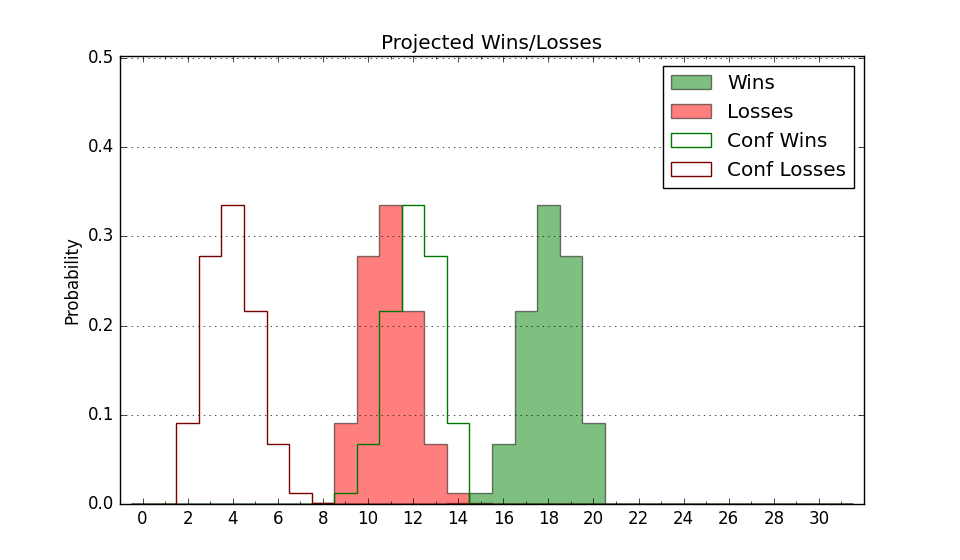

| Home | Game Probabilities | Conferences | Preseason Predictions | Odds Charts | NCAA Tournament |
| City: | Orono, Maine | |
| Conference: | America East (2nd)
| |
| Record: | 8-2 (Conf) 14-9 (Overall) | |
| Ratings: | Comp.: -3.1 (204th) Net: -3.1 (203rd) Off: 100.5 (263rd) Def: 103.6 (128th) SoR: 0.0 (124th) |
| Remaining | ||||||
|---|---|---|---|---|---|---|
| Date | Opponent | Win Prob | Pred. | |||
| 2/15 | Vermont (256) | 76.4% | W 64-57 | |||
| 2/20 | @ Albany (292) | 57.2% | W 71-69 | |||
| 2/22 | @ Binghamton (305) | 60.6% | W 68-65 | |||
| 2/27 | @ New Hampshire (357) | 84.0% | W 73-62 | |||
| 3/1 | Bryant (146) | 53.3% | W 75-74 | |||
| 3/4 | UMass Lowell (255) | 76.3% | W 77-69 | |||
| Previous | Game Score | |||||
| Date | Opponent | Win Prob | Result | Off | Def | Net |
| 11/4 | @Duke (2) | 0.9% | L 62-96 | 8.0 | -3.7 | 4.3 |
| 11/10 | @Brown (218) | 38.7% | W 69-67 | -1.8 | 5.6 | 3.7 |
| 11/15 | @Quinnipiac (215) | 38.1% | L 55-58 | -15.2 | 11.8 | -3.4 |
| 11/20 | @Richmond (248) | 46.5% | L 66-70 | -3.4 | -2.9 | -6.3 |
| 11/24 | Holy Cross (307) | 84.4% | W 80-55 | 2.0 | 15.6 | 17.5 |
| 11/29 | (N) Elon (168) | 44.3% | W 69-56 | 6.3 | 17.8 | 24.1 |
| 11/30 | @Penn (304) | 60.5% | L 64-77 | -5.6 | -13.0 | -18.6 |
| 12/1 | @Navy (299) | 59.7% | W 71-66 | 4.4 | 0.9 | 5.3 |
| 12/8 | @Fordham (225) | 40.6% | L 72-87 | -9.3 | -11.0 | -20.3 |
| 12/11 | @Duquesne (169) | 30.4% | W 61-56 | 5.0 | 15.6 | 20.6 |
| 12/14 | @Canisius (360) | 86.0% | W 84-79 | 17.6 | -27.9 | -10.2 |
| 12/21 | @Stony Brook (344) | 74.1% | L 72-74 | 2.2 | -14.2 | -12.0 |
| 12/29 | Boston University (310) | 85.2% | L 56-59 | -18.9 | -5.0 | -23.8 |
| 1/4 | @Bryant (146) | 25.1% | L 55-81 | -18.5 | -5.0 | -23.5 |
| 1/9 | Binghamton (305) | 84.0% | W 82-71 | 15.5 | -18.0 | -2.6 |
| 1/11 | Albany (292) | 82.0% | W 87-66 | 13.2 | 2.2 | 15.4 |
| 1/16 | @NJIT (353) | 78.3% | W 57-44 | -12.4 | 21.0 | 8.6 |
| 1/18 | @UMBC (294) | 57.9% | W 87-62 | 13.1 | 18.0 | 31.1 |
| 1/23 | @UMass Lowell (255) | 48.6% | W 86-85 | 5.9 | -7.4 | -1.5 |
| 1/30 | New Hampshire (357) | 94.7% | W 71-46 | -0.9 | 12.8 | 11.9 |
| 2/1 | @Vermont (256) | 48.8% | L 49-55 | -13.3 | 3.1 | -10.2 |
| 2/6 | NJIT (353) | 92.5% | W 78-74 | 13.4 | -36.0 | -22.6 |
| 2/8 | UMBC (294) | 82.4% | W 73-50 | -7.4 | 25.2 | 17.8 |
| Stats & Trends | |||||
|---|---|---|---|---|---|
| Current | Day | Week | Month | Season | |
| Composite | -3.1 | +0.2 | +0.7 | +2.6 | +2.6 |
| Comp Rank | 204 | -1 | +4 | +20 | +9 |
| Net Efficiency | -3.1 | +0.2 | +0.7 | +2.7 | -- |
| Net Rank | 203 | -- | +6 | +23 | -- |
| Off Efficiency | 100.5 | +0.1 | -0.5 | +0.2 | -- |
| Off Rank | 263 | -- | -14 | -7 | -- |
| Def Efficiency | 103.6 | +0.1 | +1.2 | +2.5 | -- |
| Def Rank | 128 | +2 | +23 | +57 | -- |
| SoS Rank | 340 | +2 | -5 | -24 | -- |
| Exp. Wins | 18.1 | +0.0 | +0.3 | +2.1 | +4.8 |
| Exp. Conf Wins | 12.1 | +0.0 | +0.3 | +2.1 | +4.0 |
| Conf Champ Prob | 28.9 | +0.1 | -4.4 | +11.5 | +23.0 |

| Advanced Stats | ||
|---|---|---|
| Stat | Value | Rank |
| Off Eff FG % | 0.505 | 181 |
| Off Ast Ratio | 0.159 | 99 |
| Off ORB% | 0.190 | 355 |
| Off TO Rate | 0.161 | 274 |
| Off FT Ratio | 0.282 | 311 |
| Def Eff FG % | 0.519 | 204 |
| Def Ast Ratio | 0.156 | 274 |
| Def ORB% | 0.340 | 339 |
| Def TO Rate | 0.177 | 44 |
| Def FT Ratio | 0.324 | 161 |